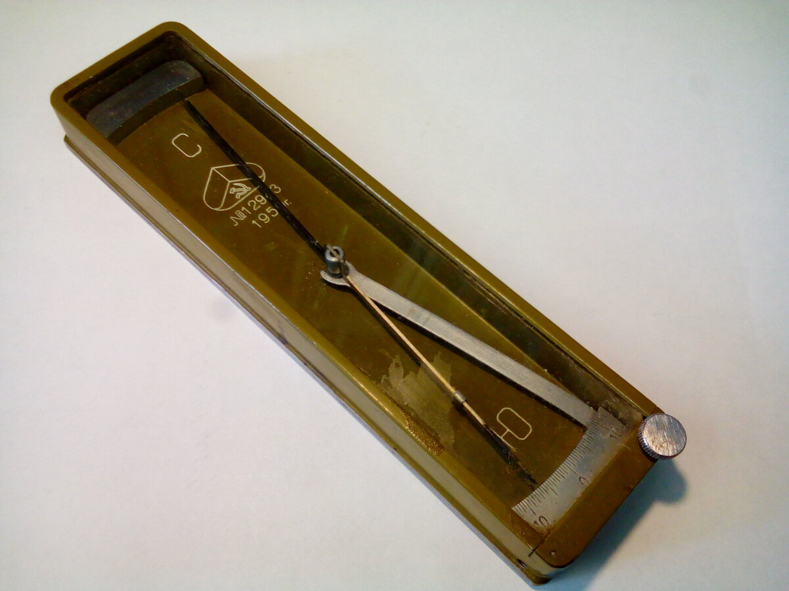
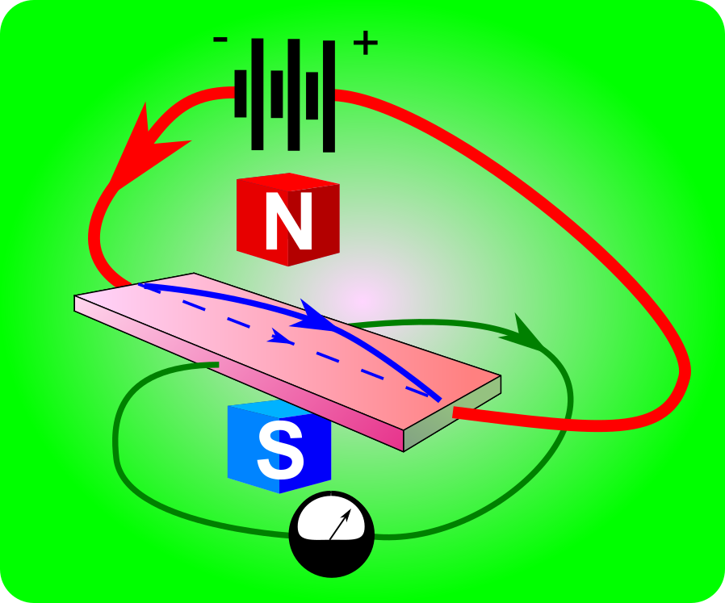

Самый чувствительный метод измерения магнитного поля
Самый простой метод измерения напряженности магнитного поля - магнитная стрелка. Согласно историческим данным компас изобретён в Китае в 11 веке. Позже в Европе его усовершенствовали, нанесли шкалу. Таким прибором пользовались до открытия эффекта Холла.

Высокоточный компас
Эффект Холла, если кто забыл или не знает, состоит в том, что если мы возьмем пластину проводника и пропустим через неё ток, а затем поместим между полюсами магнита, то в направлении перпендикулярном току в пластине образуется ток, пропорциональный по величине напряженности магнитному поля за счет искривления потока заряженных электронов в магнитном поле.

Эффект холла. Синей сплошной линией показан путь тока под влиянием магнитного поля. Синим пунктиром показан путь тока в отсутствии магнитного поля.
Чувствительность магнитометров на основе эффекта Холла находится в пределе десятков микротесла (для сравнения, напряженность магнитного поля Земли составляет около 0,5 мкТл)
Более чувствительны так называемые феррозондовые магнитометры. Их чувствительность достигает уже единиц нТл, то есть на 4 порядка лучше.
Однако, феррозонд оказывается слишком грубым при более точных измерениях магнитного поля и при измерении очень слабых изменений полей, например, вариаций магнитного поля Земли. Метод ЯМР в этом случае намного выигрывает у феррозондовых магнитометров. Его чувствительность на 7 порядков меньше единиц нанотесла. С чем сравнить такую чувствительность? Представьте товарный поезд, его масса около 7000 тонн, и на наго садится муха. Если бы существовали весы, способные отметить такое малое изменение массы, то их чувствительность была бы сравнима с ЯМР.